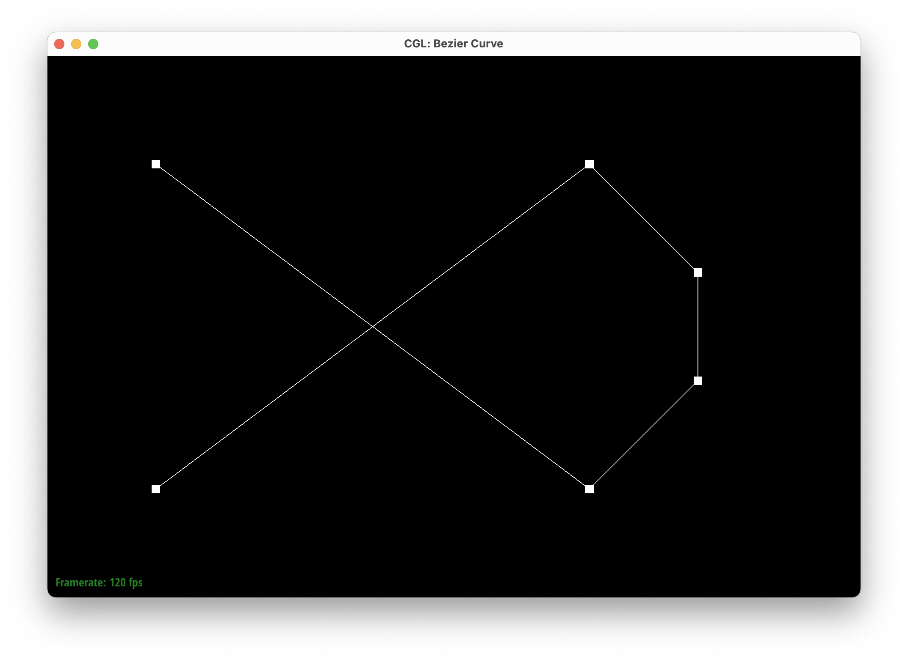

Level 0 (Points)
Level 1
Level 2
Level 3

Level 4
Level 5
Modified curve with different \(t\) shown
In this assignment, we implemented fundamental mesh processing operations using the half-edge data structure, covering Bezier curves, vertex normal calculations, remeshing operations, and Loop Subdivision. We began with De Casteljau’s algorithm for Bezier curves and surfaces, then computed area-weighted vertex normals to improve shading. Moving into remeshing, we implemented edge flips to modify connectivity and edge splits to insert new vertices while maintaining mesh integrity, including handling boundary cases. Finally, we implemented Loop Subdivision, refining a coarse mesh into a smoother, high-resolution version through edge splits, flips, and weighted vertex updates. Debugging was a significant challenge, particularly ensuring pointer correctness, as misassignments led to holes or broken topology. This assignment deepened our understanding of mesh manipulation and the importance of efficient data structures in 3D graphics.
In this part, we implemented de Casteljau's algorithm to evaluate Bezier curves. This algorithm recursively subdivides the control points of a Bezier curve to find the final evaluated point. Given a set of control points, the algorithm computes the intermediate points at each level of subdivision until the final point is reached. This is done by linearly interpolating between each pair of points at each level, as detailed by the formula below.
$$ b^{n+1}_i = (1 - t) \cdot b^n_i + t \cdot b^n_{i+1} $$
Here, \(b^n_i\) represents the \(i\)-th control point at level \(n\), and \(t\) is the parameter that determines the position of the evaluated point along the curve. By recursively applying this formula, we can evaluate the Bezier curve at any point \(t\). The set of all the evaluated points from \(t = 0\) to \(t = 1\) forms the Bezier curve.
To demonstrate the implementation of de Casteljau's algorithm, we created a Bezier curve with 6 control points of our choosing. The screenshots below show the evaluation of the curve at different levels of subdivision.
Level 0 (Points)
Level 1
Level 2
Level 3
Level 4
Level 5
Modified curve with different \(t\) shown
The de Casteljau algorithm can be extended to evaluate Bezier surfaces by considering the control points as a two-dimensional grid. To that end, we modified the functions we implemented for Bezier curves to work with Bezier surfaces. The algorithm evaluates the surface at a given pair of parameters \(u\) and \(v\) by first evaluating the Bezier curves along the rows and columns of the control points grid, respectively. This is done by recursively subdividing the control points and interpolating between them to find the final point on the curve.
Evaluate Along \(u\) (Rows)
The function evaluate1D takes a set of 3D control points and recursively reduces them using evaluateStep until only one point remains. This function is first applied to each row of control points to interpolate along \(u\), yielding a new set of intermediate control points.
Evaluate Along \(v\) (Columns)
The intermediate points obtained from the first step are then treated as a new Bézier curve. Applying evaluate1D again, this time along \(v\), computes the final interpolated point on the Bézier surface.
Teapot
We implemented the function Vertex::normal() computes the area-weighted normal for a vertex by averaging the normals of adjacent faces.
It initializes a vector accumulator and iterates over all neighboring faces using the half-edge structure. For each face, it checks if it's a boundary,
then computes its normal using the cross product of two edge vectors. This normal, proportional to the face's area, is then being added to the accumulator.
The process repeats until all faces are considered, and the final summed normal is normalized before being returned.

Teapot shading without vertex normals
Teapot shading with vertex normals
The flipEdge function in HalfedgeMesh flips a non-boundary edge by updating its connectivity while preserving mesh topology.
The function first checks if the given edge is a boundary, returning immediately if true.
It then retrieves the associated halfedges, faces, and vertices, and storing them in temporary values, ensuring that the new configuration maintains valid references.
The vertex pointers are updated to reflect the new edge endpoints, while edges and faces are reassigned their correct halfedges.
The halfedge pointers are then restructured to reflect the flipped configuration with all components, maintaining proper adjacency and preserving mesh integrity.
We attempted debugging with trying out on the teapot mesh with GUI to see if there were holes formed, using check_for() to make sure that pointer reassignments were done correctly. We initially attempted to not use set_neighbours, but that resulted in a lot of holes in the mesh.
The images below are before and after the edge flip.
Teapot before edge flip
Teapot with one edge flipped
Teapot with multiple edges flipped
For the splitEdge function, We implemented an edge split operation that adds a new vertex at the midpoint of a given edge.
For non-boundary edges, We created additional halfedges (h5, h5t, h6, h6t, h7, h7t), two new faces (f2 and
f3), and three new edges (e5, e6, e7) to maintain a consistent mesh structure. The key challenge was ensuring
proper (next) and (twin) relationships to maintain correct connectivity and prevent inconsistencies.
For extra credit, if the edge is on the boundary, we first determined which halfedge was part of the interior face and used that as the reference for splitting.
The split created a new vertex m at the midpoint of the edge and introduced two new halfedges (h3 and h4) to maintain proper connectivity.
We also created a new face (f1) and two new edges (e3 and e4), ensuring all pointers were properly reassigned.
We used the check_for(...) function to debug pointer assignments, especially for the twin and next halfedge relationships.
Additionally, we flagged the new edges and vertex as isNew to track changes, ensuring that the remeshing process remained consistent with future operations.
Below are images showing the mesh before and after splitting edges, a combination of edge splits and flips, as well as splits on boundaries.
Beetle before edge splits
Beetle after edge splits
Beetle after edge splits and flips
Beetle after boundary edge splits
In this part, we implemented the loop subdivision algorithm to upsample a mesh. Upsampling is useful for converting a coarse polygon mesh into a higher-resolution one for better display, more accurate simulation, and other purposes. One of the algorithm that achieves this is loop subdivision, which subdivides each triangle in the mesh into four smaller triangles and updates the vertex positions based on a weighting scheme. The algorithm consists of two main steps: subdividing each triangle and updating the vertex positions. To implmenet loop subdivision, we first computed the new positions of the vertices in the original mesh. These positions are applied after the mesh is subdivided via edge splits and flips. The new positions are calculated based on the original vertex positions and the neighboring vertex positions, using the weights described below.
The new position of a vertex splitting the shared edge \((A, B)\) between a pair of triangles \((A, C, B)\) and \((A, B, D)\) is given by:
$$ 3/8 \cdot (A + B) + 1/8 \cdot (C + D) $$
This gives the vertices closest to the edge, i.e. A and B, more weight in the new position calculation. For existing vertices, the updated position is calculated using all the neighboring vertices. For an existing vertex \(v\), the updated position is given by:
$$ (1 - deg(v) \cdot u) \cdot v_{pos} + u \cdot \sum_{n \in N(v)} n_{pos} $$
where \(deg(v)\) is the degree of the vertex, \(u\) is a constant either \(3/16\) if \(deg(v) = 3\) or \( 3/(8\cdot deg(v)) \) otherwise. The sum is taken over all the neighboring vertices of \(v\). Once the new positions are computed, the mesh is subdivided by splitting the edges and flipping the edges, and we flip all new edges that connect an old vertex and a new vertex, i.e. the edges that does not lie on the boundary of the 4-way subdivided triangles.
To demonstrate the loop subdivision algorithm, we upsampled a mesh using the loop subdivision algorithm. The screenshots below show the mesh before and after several iterations of loop subdivision.
Cube (Original)
Cube (Subdivided 1)
Cube (Subdivided 2)
Cube (Subdivided 3)
Cube (Subdivided 4)
Subdividing the cube multiple times results in an asymmetric shape. This is because the mesh for the original cube is not symmetric, and the subdivision algorithm does not preserve symmetry. To address this issue, we split the edge on each side to make a cross shape. This ensures that the mesh for each side of the cube is consistent and symmetric, resulting in a symmetric subdivision. The screenshots below show the cube after several iterations of loop subdivision with the edges split to form a cross shape.
Cube (Symmetric)
Cube (Subdivided 1 Symmetric)
Cube (Subdivided 2 Symmetric)
Cube (Subdivided 3 Symmetric)
Cube (Subdivided 4 Symmetric)
Cube (Subdivided 4 Symmetric)
For extra credit we implemented the butterfly subdivision algorithm . The butterfly subdivision algorithm applies a different algorithm for computing the new position of the vertices depending on the degree of the vertices that form an edge. We modified the loop subdivision code's part that computes the new vertex positions to use the butterfly subdivision algorithm.
For the edge that connects two vertices of degree 6, we take the 8 points surrounding the edge and compute the new position of the vertex as a weighted average of these points. The weights are given by the formula below.
$$ a = \frac{1}{2}-w, b = \frac{1}{8}+2w, c = -\frac{1}{16}-w, d = w $$
where \(w\) is a small constant. In our code, we used \(10^{-9}\) as the value of \(w\). Then, these weights are applied to the two degree 6 vertices and the 8 surrounding points to compute the new position of the vertex. The screenshot below shows the 10-point stencil used in the butterfly subdivision algorithm.
Ten Point Stencil (Zorin, Schröder, Sweldens)
For the edge that connects one vertex of degree 6 and one vertex of degree K where K is not 6, we take the K points neighboring the vertex with degree K and use the following weights to compute the new position of the vertex. Here, the weights account for 25% of the new position, and the other 75% is weighted to the vertex of degree K. The formula for the weights is given below.
$$ \mathbf{w} = \begin{cases} \left[ \frac{5}{12},\; -\frac{1}{12},\; -\frac{1}{12} \right], & \text{if } K = 3, \\[1em] \left[ \frac{3}{8},\; 0,\; -\frac{1}{8},\; 0 \right], & \text{if } K = 4, \\[1em] \left[ w_0,\, w_1,\, \dots,\, w_{K-1} \right], & \text{with } w_i = \frac{\frac{1}{4} + \cos\!\left(\frac{2\pi i}{K}\right) + \frac{1}{2}\cos\!\left(\frac{4\pi i}{K}\right)}{K} \text{ for } i = 0, 1, \dots, K-1. \end{cases} $$
Finally, in the extraordinary case of an edge connecting two vertices that are not of degree 6, we apply the same process as the edge connecting one vertex of degree 6 and one vertex of degree K, but we apply the method twice, once for each vertex, and average the results to get the new position of the vertex. The screenshot below shows the results of applying the butterfly subdivision algorithm to some meshes.
Cube (Original)
Cube (Subdivided 4)
Cube (Symmetric)
Cube (Subdivided 4 Symmetric)
Cow (Original)
Cow (Subdivided 1)
Our artwork is called boba or pepper, as you can see that a boba cup turns uneven and becomes a pepper after a couple rounds of subdivisions. We considered different shapes and granularity of the boba cup to create the pepper shape(definitely intended).
Boba (Original)
Pepper (Subdivided)